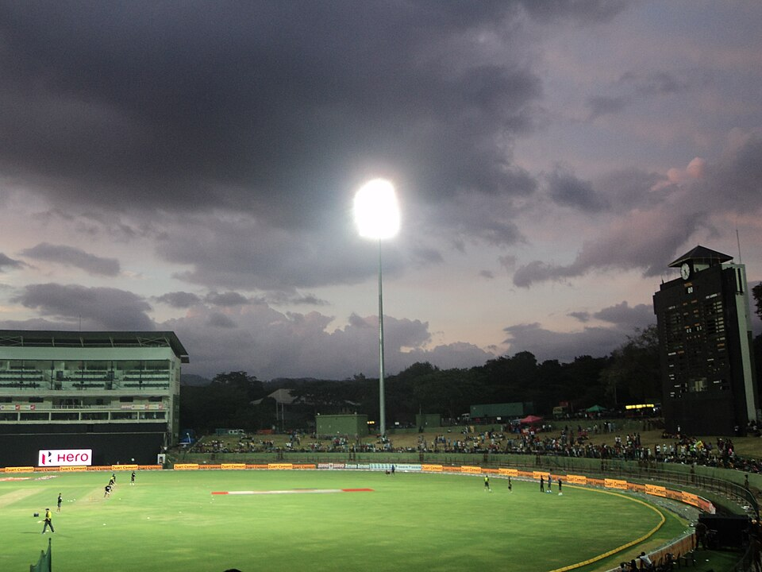
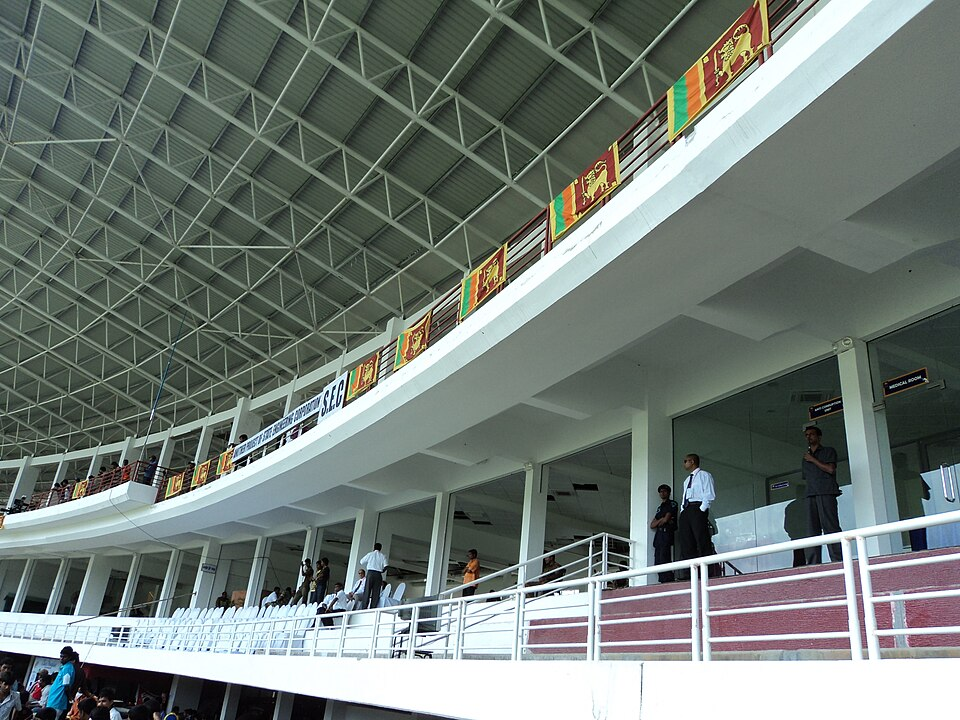
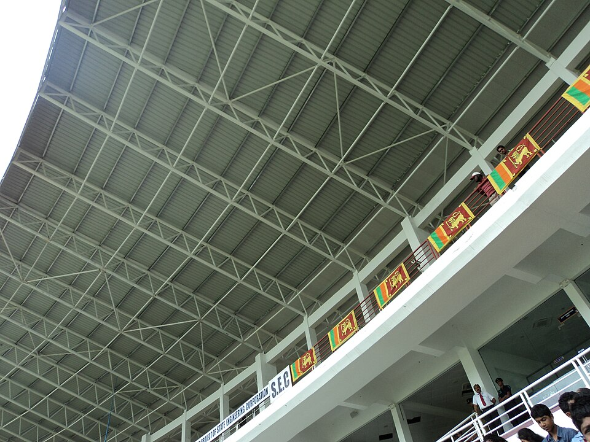
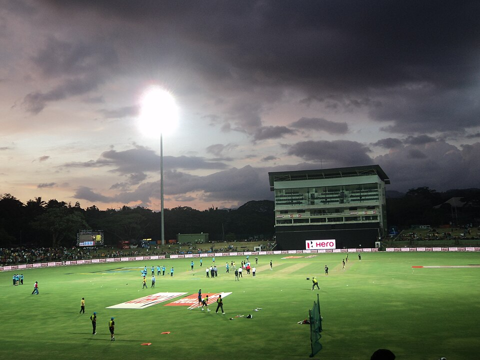
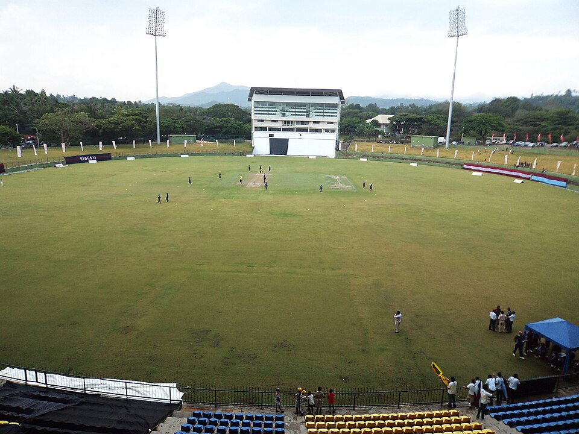
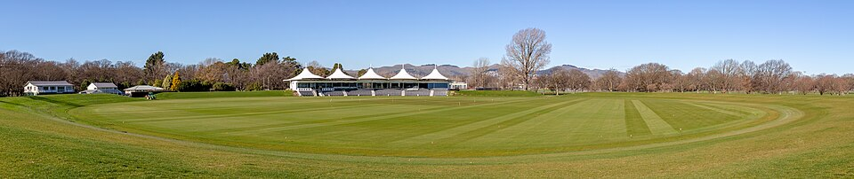
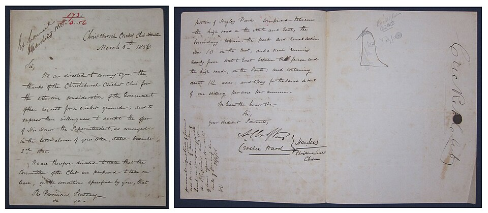
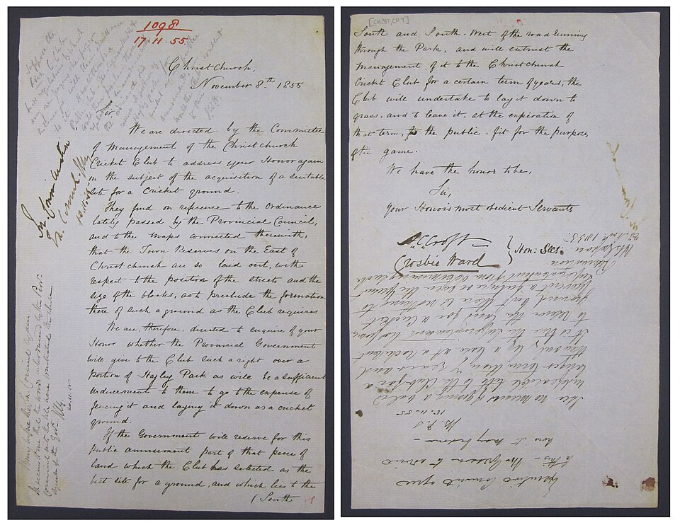
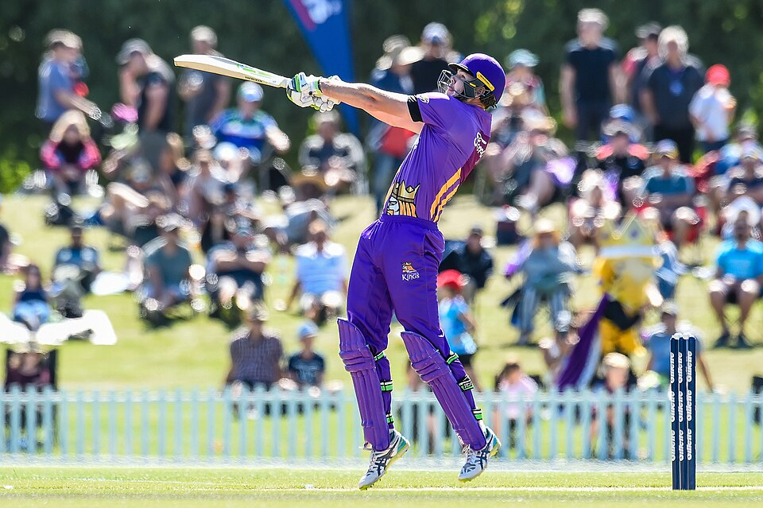
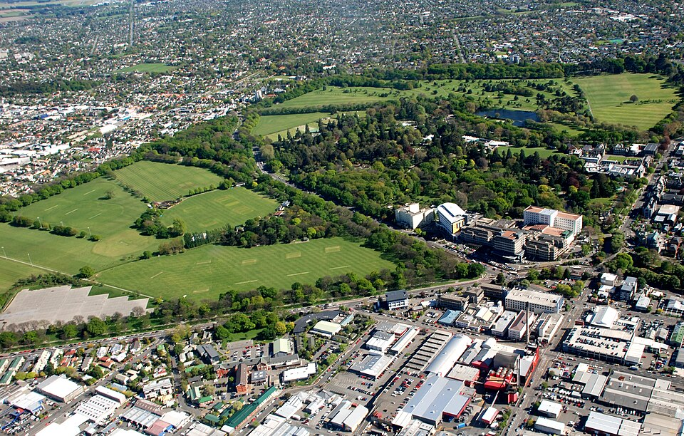

#84 Khan Shaheb Osman Ali Stadium · Fatullah (1 Tests)
no candidates
#85 Pallekele International Cricket Stadium · Kandy (1 Tests)

0: CC BY-SA 3.0
1: CC BY-SA 3.0
2: CC BY-SA 3.0
3: CC BY-SA 3.0
4: CC BY-SA 3.0#86 Hagley Oval · Christchurch (1 Tests)

0: CC BY-SA 4.0
1: CC BY-SA 2.0
2: CC BY-SA 2.0
3: CC BY-SA 4.0
4: CC BY 2.0#87 Barsapara Cricket Stadium · Guwahati (1 Tests)
 0: CC BY-SA 4.0
0: CC BY-SA 4.0 1: CC BY-SA 4.0
1: CC BY-SA 4.0